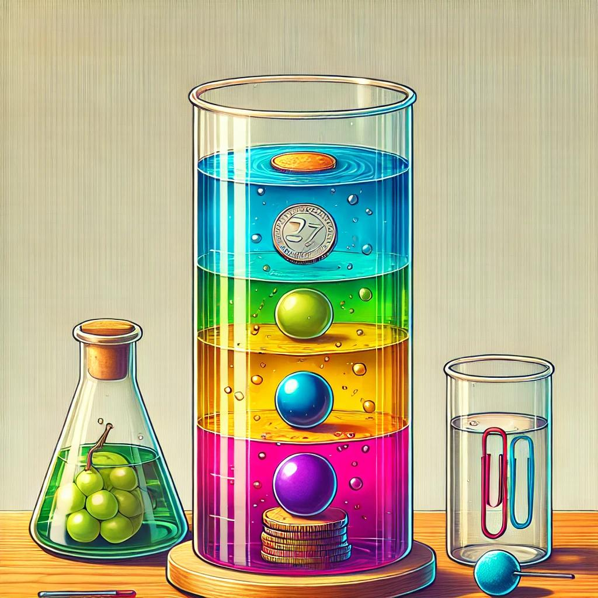
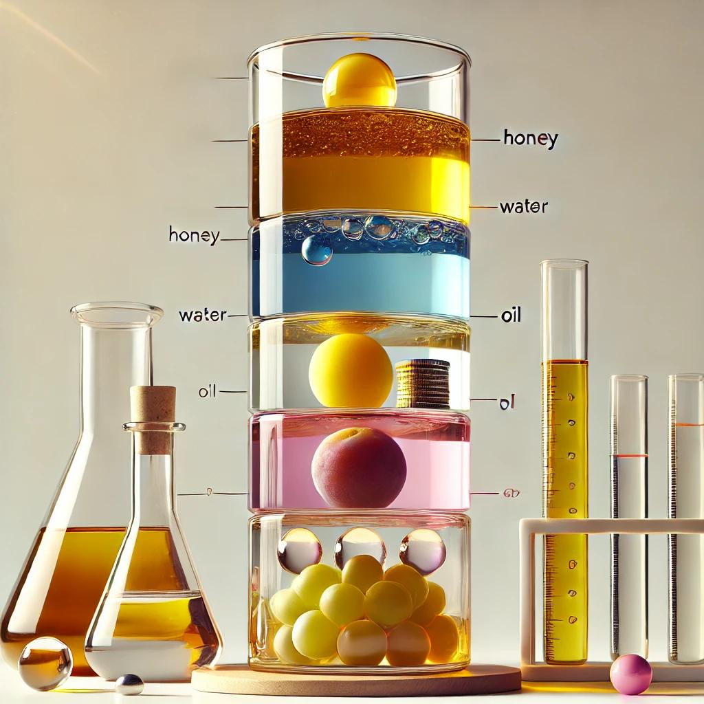
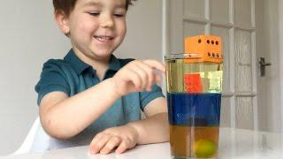
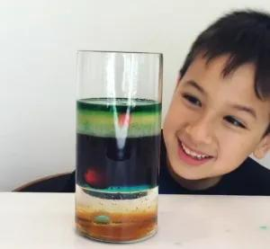

Experiment 3: Density Tower Experiment
Build a Tower of Liquids!

Ever wondered why some objects float while others sink? In this experiment, you’ll create a colorful tower using different liquids like honey, water, and oil. Each liquid has a different density, which allows them to stack in layers. You’ll also test how objects float or sink depending on their density.
What You’ll Do
You’re going to stack common household liquids to form a tower. Then, you’ll drop small objects into the tower to see how density determines whether they sink, float, or settle in between.
What You’ll Need
Here’s everything you’ll need for this experiment:
- Clear Glass or Container: To see the layers clearly.
- Hoey or Syrup: The densest layer.
- Water: Add food colouring for fun.
- Cooking Oil: A lighter liquid for the upper layer.
- Optional Liquids: Rubbing alcohol, milk, or dish soap for more layers.
- Small Objects: Examples include a coin, grape, ping-pong ball, paperclip, and bead.
- Spoon or Pipette: To carefully add the liquids.

Steps to Follow
-
Prepare Your Liquids:
Pour each liquid into a separate cup. You can add food coloring to water or rubbing alcohol to make them colorful and easy to identify.
-
Layer the Liquids:
- Start by pouring the heaviest liquid (honey or syrup) into the container.
- Slowly and gently add the next liquid (like colored water) by pouring it over the back of a spoon.
- Continue adding layers with lighter liquids, like oil, until your tower is complete.
-
Test Object Buoyancy:
Drop small objects into the density tower one at a time. Watch where they settle in the layers and take note of their position.

What’s Happening?
Here’s the science behind it:
- Density* refers to how much “stuff” is packed into a space. Heavier liquids like honey have more density and sink to the bottom, while lighter liquids like oil stay on top.
- Objects float or sink based on their density compared to the liquid they are in. A ping-pong ball floats on oil but sinks in water, while a coin sinks to the bottom.
Try These Fun Variations
- Add more liquids, like dish soap or rubbing alcohol, to create more layers.
- Predict where each object will settle before dropping it in.
- Stir the liquids gently and watch them slowly separate back into layers over time.
Tips for Success
- Pour liquids slowly to avoid mixing them. Using the back of a spoon helps control the flow.
- Use clear containers for the best visual effect.
- Clean up spills immediately to avoid sticky messes.
Why It’s Cool
This experiment is a fantastic way to explore the concept of density. It’s colorful, easy to set up, and helps you understand why some objects float while others sink. Plus, it’s a great science fair project that’s sure to grab attention!

Give it a try and create your own density tower!